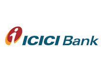
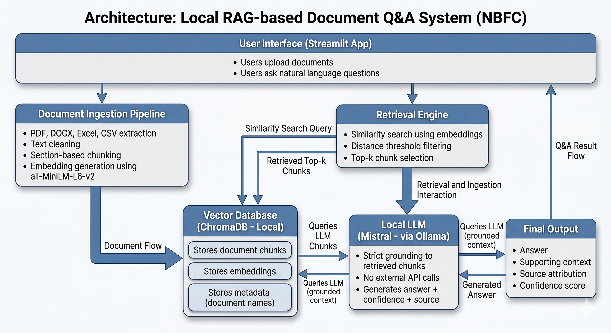
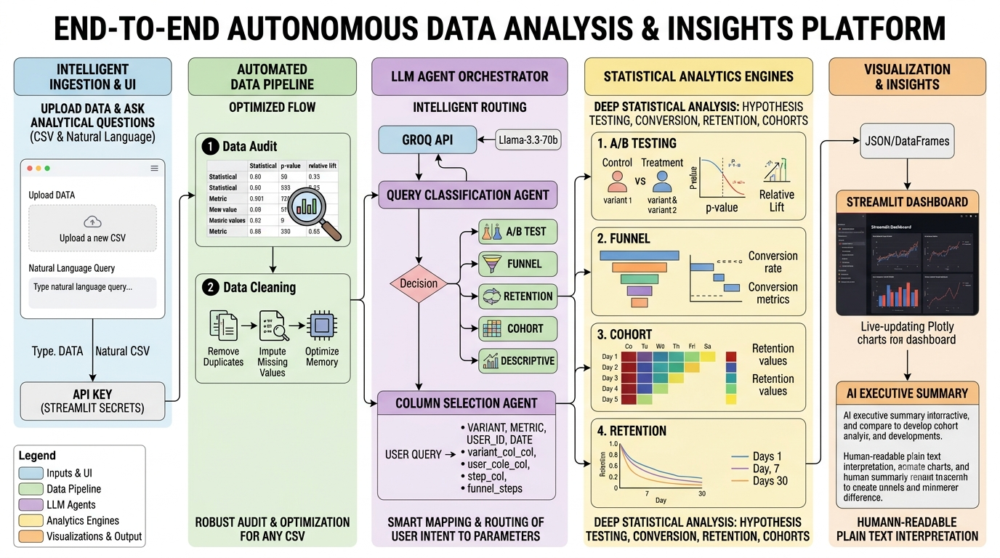
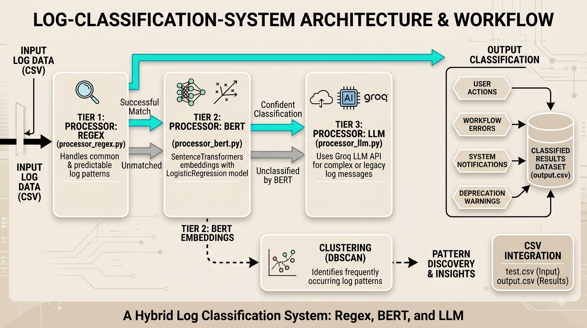
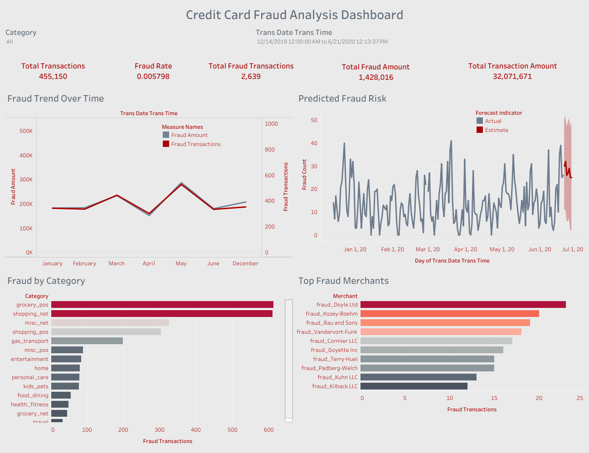

For me, building end-to-end solutions isn't just about training models or writing code—it's about digging into the real problem, staying curious, and creating impact where it counts.
Sardar Patel College of Engineering (SPCE)
CGPA: 8.51 / 10
For me, building end-to-end solutions isn't just about training models or writing code—it’s about digging into the real problem, staying curious, and creating impact where it counts.
I map out the problem, domain constraints, and context before building.
I rely on metrics, experimentation, and feedback—not assumptions.
I build, validate, and optimize until the solution delivers measurable impact.
I adapt quickly to new tools and methods to solve complex problems better.

Managed core treasury data infrastructure, pipeline automation, and high-volume transaction analytics for FX and derivative markets.
Led a 21-member robotics team to AIR 19 (2021) and 94/100 in Stage 2 (2022) at DD Robocon, while engineering autonomous control logic using Python, C++, Raspberry Pi, and Arduino.
Completed a hands-on simulation covering customer churn analysis, exploratory data analysis, feature engineering, and predictive modeling for power and energy clients.

Engineered a fully local RAG pipeline for document Q&A using vector search and a local LLM.

Built a multi-agent AI engine that automates statistical hypothesis testing, conversion funnels, cohort analysis, and executive insight generation.

Built a multi-tiered pipeline combining Regex, BERT embeddings, and Groq LLM API to automatically classify system, application, and CRM logs into user actions, workflow errors, notifications, and deprecation warnings. Features DBSCAN clustering for pattern discovery.

Built an interactive fraud analytics dashboard analyzing 1.2M+ credit card transactions to detect suspicious behavioral patterns and applied time-series forecasting to identify emerging fraud trends.
Exploring opportunities in Data Science & AI/ML. Whether you have an open role or a project to collaborate on, let’s connect!
Prefer filling out a quick contact form? Click below to leave a message, and I'll get back to you as soon as possible.
Fill Out Contact Form